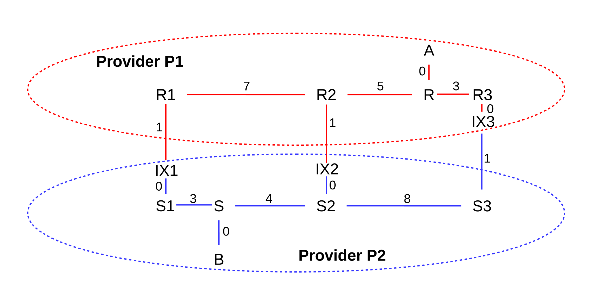

14 Large-Scale IP Routing¶
In the previous chapter we considered two classes of routing-update algorithms: distance-vector and link-state. Each of these approaches requires that participating routers have agreed first to a common protocol, and then to a common understanding of how link costs are to be assigned. We will address this in the following chapter on BGP, 15 Border Gateway Protocol (BGP); a basic problem is that if one site prefers the hop-count approach, assigning every link a cost of 1, while another site prefers to assign link costs in proportion to their bandwidth, then meaningful path cost comparisons between the two sites simply cannot be done.
Before we can get to BGP, however, we need to revisit the basic IP forwarding idea. From the beginning we envisioned an IP address as being divisible into network and host portions; the job of most routers was to examine only the network prefix, and make the next_hop forwarding decision based on that. The net/host division for IPv4 addresses was originally based on the Class A/B/C mechanism; the net/host division for most IPv6 addresses was 64 bits for each. In 9.5 The Classless IP Delivery Algorithm we saw how to route on IPv4 network prefixes of arbitrary length; the same idea works for IPv6.
In this chapter we are going to expand on this by allowing different routers at different positions in the routing universe to make their forwarding decisions based on different network-prefix lengths, all for the same destination address. That is, a backbone router might forward to a given IPv4 address D based only on the first 12 bits of D; a more regional router might base its decision on the first 18 bits, and a site router might forward to the final subnet based on the first 24 bits. This allows the creation of routing hierarchies with multiple levels, which has the potential to greatly increase routing scalability and reduce the size of the forwarding tables. The actual mechanics of forwarding by any one router will still be as in 9.5 The Classless IP Delivery Algorithm.
The term routing domain is used to refer to a set of routers under common administration, using a common link-cost assignment; another term for this is autonomous system. In the previous chapter, all routing took place within one routing domain; now we will envision the Internet as a whole consisting of a patchwork of independent routing domains. While use of a common routing-update protocol within the routing domain is not an absolute requirement – for example, some subnets may internally use distance-vector while the site’s “backbone” routers use link-state – we can assume that all routers have a uniform view of the site’s topology and cost metrics.
“Large-scale” IP routing is fundamentally about the coordination of routing between multiple independent routing domains. Even in the earliest Internet there were multiple routing domains, if for no other reason than that how to measure link costs was (and still is) too unsettled to set in stone. However, another component of large-scale routing is support for hierarchical routing, above the level of subnets; we turn to this next.
14.1 Classless Internet Domain Routing: CIDR¶
CIDR is the mechanism for supporting hierarchical routing in the Internet backbone. Subnetting moves the network/host division line further rightwards; CIDR allows moving it to the left as well. With subnetting, the revised division line is visible only within the organization that owns the IP network-address block; subnetting is not visible outside. CIDR allows aggregation of IP address blocks in a way that is visible to the Internet backbone.
When CIDR was introduced to IPv4 in 1993, the following were some of the justifications for it, all relating to the increasing size of the backbone IP forwarding tables, and expressed in terms of the then-current Class A/B/C mechanism:
- The Internet is running out of Class B addresses (this happened in the mid-1990’s)
- There are too many Class C’s (the most numerous) for backbone forwarding tables to be efficient
- Eventually IANA (the Internet Assigned Numbers Authority) will run out of IP addresses (this happened in 2011)
Assigning non-CIDRed multiple Class C’s in lieu of a single Class B would have helped with the first point in the list above, but made the second point worse.
Ironically, the current (2013) very tight market for IPv4 address blocks is likely to lead to larger and larger backbone IPv4 forwarding tables, as sites are forced to use multiple small address blocks instead of one large block.
By the year 2000, CIDR had essentially eliminated the Class A/B/C mechanism from the backbone Internet, and had more-or-less completely changed how backbone routing worked. You purchased an address block from a provider or some other IP address allocator, and it could be whatever size you needed, from /32 to /15.
What CIDR enabled is IP routing based on an address prefix of any length; the Class A/B/C mechanism of course used fixed prefix lengths of 8, 16 and 24 bits. Furthermore, CIDR allows different routers, at different levels of the backbone, to route on prefixes of different lengths. If organization P were allocated a /10 block, for example, then P could suballocate into /20 blocks. At the top level, routing to P would likely be based on the first 10 bits, while routing within P would be based on the first 20 bits.
IPv6 never had address classes, and so arguably CIDR was supported natively from the beginning. Routing to an address 2400:1234:5678:abcd:: could be done based on the /32 prefix 2400:1234::, or the /48 prefix 2400:1234:5678::, or the /56 prefix 2400:1234:5678:ab::, or any other length.
CIDR was formally introduced to IPv4 by RFC 1518 and RFC 1519. For a while there were strategies in place to support compatibility with non-CIDR-aware routers; these are now obsolete. In particular, it is no longer appropriate for large-scale IPv4 routers to fall back on the Class A/B/C mechanism in the absence of CIDR information; if the latter is missing, the routing should fail.
One way to look at the basic strategy of CIDR is as a mechanism to consolidate multiple network blocks going to the same destination into a single entry. Suppose a router has four IPv4 class C’s all to the same destination:
200.7.0.0/24 ⟶ foo200.7.1.0/24 ⟶ foo200.7.2.0/24 ⟶ foo200.7.3.0/24 ⟶ foo
The router can replace all these with the single entry
200.7.0.0/22 ⟶ foo
It does not matter here if foo represents a single ultimate destination or if it represents four sites that just happen to be routed to the same next_hop.
It is worth looking closely at the arithmetic to see why the single entry uses /22. This means that the first 22 bits must match 200.7.0.0; this is all of the first and second bytes and the first six bits of the third byte. Let us look at the third byte of the network addresses above in binary:
200.7.000000 00.0/24 ⟶ foo200.7.000000 01.0/24 ⟶ foo200.7.000000 10.0/24 ⟶ foo200.7.000000 11.0/24 ⟶ foo
The /24 means that the network addresses stop at the end of the third byte. The four entries above cover every possible combination of the last two bits of the third byte; for an address to match one of the entries above it suffices to begin 200.7 and then to have 0-bits as the first six bits of the third byte. This is another way of saying the address must match 200.7.0.0/22.
Most implementations actually use a bitmask, eg 255.255.252.0, rather than the number 22. Note 252 is, in binary, 1111 1100, with 6 leading 1-bits, so 255.255.252.0 has 8+8+6=22 1-bits followed by 10 0-bits.
The IP delivery algorithm of 9.5 The Classless IP Delivery Algorithm still works with CIDR, with the understanding that the router’s forwarding table can now have a network-prefix length associated with any entry. Given a destination D, we search the forwarding table for network-prefix destinations B/k until we find a match; that is, equality of the first k bits. In terms of masks, given a destination D and a list of table entries ⟨prefix,mask⟩ = ⟨B[i],M[i]⟩, we search for i such that (D & M[i]) = B[i].
But what about the possibility of multiple matches? For subnets, avoiding this was the responsibility of the subnetting site, but responsibility for avoiding this with CIDR is much too distributed to be declared illegal by IETF mandate. Instead, CIDR introduced the longest-match rule: if destination D matches both B1/k1 and B2/k2, with k1 < k2, then the longer match B2/k2 match is to be used. (Note that if D matches two distinct entries B1/k1 and B2/k2 then either k1 < k2 or k2 < k1).
14.2 Hierarchical Routing¶
Strictly speaking, CIDR is simply a mechanism for routing to IP address blocks of any prefix length; that is, for setting the network/host division point to an arbitrary place within the 32-bit IP address.
However, by making this network/host division point variable, CIDR introduced support for routing on different prefix lengths at different places in the backbone routing infrastructure. For example, top-level routers might route on /8 or /9 prefixes, while intermediate routers might route based on prefixes of length 14. This feature of routing on fewer bits at one point in the Internet and more bits at another point is exactly what is meant by hierarchical routing.
We earlier saw hierarchical routing in the context of subnets: traffic might first be routed to a class-B site 147.126.0.0/16, and then, within that site, to subnets such as 147.126.1.0/24, 147.126.2.0/24, etc. But with CIDR the hierarchy can be much more flexible: the top level of the hierarchy can be much larger than the “customer” level, lower levels need not be administratively controlled by the higher levels (as is the case with subnets), and more than two levels can be used.
CIDR is an address-block-allocation mechanism; it does not directly speak to the kinds of policy we might wish to implement with it. Here are four possible applications; the latter two involve hierarchical routing:
- Application 1 (legacy): CIDR allows the allocation of multiple blocks of Class C, or fragments of a Class A, to a single customer, so as to require only a single forwarding-table entry for that customer
- Application 2 (legacy): CIDR allows opportunistic aggregation of routes: a router that sees the four 200.7.x.0/24 routes above in its table may consolidate them into a single entry.
- Application 3 (current): CIDR allows huge provider blocks, with suballocation by the provider. This is known as provider-based routing.
- Application 4 (hypothetical): CIDR allows huge regional blocks, with suballocation within the region, somewhat like the original scheme for US phone numbers with area codes. This is known as geographical routing.
Each of these has the potential to achieve a considerable reduction in the size of the backbone forwarding tables, which is arguably the most important goal here. Each involves using CIDR to support the creation of arbitrary-sized address blocks and then routing to them as a single unit. For example, the Internet backbone might be much happier if all its routers simply had to maintain a single entry ⟨200.0.0.0/8, R1⟩, versus 256 entries ⟨200.x.0.0/16, R1⟩ for every value of x. (As we will see below, this is still useful even if a few of the x’s have a different next_hop.) Secondary CIDR goals include bringing some order to IP address allocation and (for the last two items in the list above) enabling a routing hierarchy that mirrors the actual flow of most traffic.
Hierarchical routing does introduce one new wrinkle: the routes chosen may no longer be globally optimal, at least if we also apply the routing-update algorithms hierarchically. Suppose, for example, at the top level forwarding is based on the first eight bits of the address, and all traffic to 200.0.0.0/8 is routed to router R1. At the second level, R1 then routes traffic (hierarchically) to 200.20.0.0/16 via R2. A packet sent to 200.20.1.2 by an independent router R3 might therefore pass through R1, even if there were a lower-cost path R3→R4→R2 that bypassed R1. The top-level forwarding entry ⟨200.0.0.0/8,R1⟩, in other words, may represent a simplification of the real situation. Prohibiting “back-door” routes like R3→R4→R2 is impractical (and would not be helpful either); customers are independent entities.
This non-optimal routing issue cannot happen if all routers agree upon one of the shortest-path mechanisms of 13 Routing-Update Algorithms; in that case R3 would learn of the lower-cost R3→R4→R2 path. But then the potential hierarchical benefits of decreasing the size of forwarding tables would be lost. More seriously, complete global agreement of all routers on one common update protocol is simply not practical; in fact, one of the goals of hierarchical routing is to provide a workable alternative. We will return to this below in 14.4.3 Hierarchical Routing via Providers.
14.3 Legacy Routing¶
Back in the days of NSFNet, the Internet backbone was a single routing domain. While most customers did not connect directly to the backbone, the intervening providers tended to be relatively compact, geographically – that is, regional – and often had a single primary routing-exchange point with the backbone. IP addresses were allocated to subscribers directly by the IANA, and the backbone forwarding tables contained entries for every site, even the Class C’s.
Because the NSFNet backbone and the regional providers did not necessarily share link-cost information, routes were even at this early point not necessarily globally optimal; compromises and approximations were made. However, in the NSFNet model routers generally did find a reasonable approximation to the shortest path to each site referenced by the backbone tables. While the legacy backbone routing domain was not all-encompassing, if there were differences between two routes, at least the backbone portions – the longest components – would be identical.
14.4 Provider-Based Routing¶
In provider-based routing, large CIDR blocks are allocated to large-scale providers. The different providers each know how to route to one another. While some subscribers will still have legacy IP-address blocks assigned to them directly, many others will obtain their IP addresses from within their providers’ blocks. For the latter group, traffic from the outside is routed first to the provider via the provider’s address block, and then, within the provider’s routing domain, to the subscriber. We may even have a hierarchy of providers, so packets would be routed first to the large-scale provider, and eventually to the local provider. There may no longer be a central backbone; instead, multiple providers may each build parallel transcontinental networks.
Here is a simpler example, in which providers have unique paths to one another. Suppose we have providers P0, P1 and P2, with customers as follows:
- P0: customers A,B,C
- P1: customers D,E
- P2: customers F,G
We will also assume that each provider has an IP address block as follows:
- P0: 200.0.0.0/8
- P1: 201.0.0.0/8
- P2: 202.0.0.0/8
Let us now allocate addresses to the customers:
A: 200.0.0.0/16B: 200.1.0.0/16C: 200.2.16.0/20 (16 = 0001 0000)D: 201.0.0.0/16E: 201.1.0.0/16F: 202.0.0.0/16G: 202.1.0.0/16
The routing model is that packets are first routed to the appropriate provider, and then to the customer. While this model may not in general guarantee the shortest end-to-end path, it does in this case because each provider has a single point of interconnection to the others. Here is the network diagram:
With this diagram, P0’s forwarding table looks something like this:
| P0 | |
|---|---|
| destination | next_hop |
| 200.0.0.0/16 | A |
| 200.1.0.0/16 | B |
| 200.2.16.0/20 | C |
| 201.0.0.0/8 | P1 |
| 202.0.0.0/8 | P2 |
That is, P0’s table consists of
- one entry for each of P0’s own customers
- one entry for each other provider
If we had 1,000,000 customers divided equally among 100 providers, then each provider’s table would have only 10,099 entries: 10,000 for its own customers and 99 for the other providers. Without CIDR, each provider’s forwarding table would have 1,000,000 entries.
CIDR enables hierarchical routing by allowing the routing decision to be made on different prefix lengths in different contexts. For example, when a packet is sent from D to A, P1 looks at the first 8 bits while P0 looks at the first 16 bits. Within customer A, routing might be made based on the first 24 bits.
Even if we have some additional “secondary” links, that is, additional links that do not create alternative paths between providers, the routing remains relatively straightforward. Shown here are the private customer-to-customer links B–D and E–F; these are likely used only by the customers they connect. Two customers, A and E, are multihomed; that is, they have connections to alternative providers: A–P1 and E–P2. (The term “multihomed” is often applied to any host with multiple network interfaces on different LANs, which includes any router; here we mean more specifically that there are multiple network interfaces connecting to different providers.)
Typically, though, while A and E may use their alternative-provider links all they want for outbound traffic, their respective inbound traffic would still go through their primary providers P0 and P1 respectively.
14.4.1 Internet Exchange Points¶
The long links joining providers in these diagrams are somewhat misleading; providers do not always like sharing long links and the attendant problems of sharing responsibility for failures. Instead, providers often connect to one another at Internet eXchange Points or IXPs; the link P0──────P1 might actually be P0───IXP───P1, where P0 owns the left-hand link and P1 the right-hand. IXPs can either be third-party sites open to all providers, or private exchange points. The term “Metropolitan Area Exchange”, or MAE, appears in the names of the IXPs MAE-East, originally near Washington DC, and MAE-West, originally in San Jose, California; each of these is now actually a set of IXPs. MAE in this context is now a trademark.
14.4.2 CIDR and Staying Out of Jail¶
Suppose we want to change providers. One way we can do this is to accept a new IP-address block from the new provider, and change all our IP addresses. The paper Renumbering: Threat or Menace [LKCT96] was frequently cited – at least in the early days of CIDR – as an intimation that such renumbering was inevitably a Bad Thing. In principle, therefore, we would like to allow at least the option of keeping our IP address allocation while changing providers.
An address-allocation standard that did not allow changing of providers might even be a violation of the US Sherman Antitrust Act; see American Society of Mechanical Engineers v Hydrolevel Corporation, 456 US 556 (1982). The IETF thus had the added incentive of wanting to stay out of jail, when writing the CIDR standard so as to allow portability between providers (actually, antitrust violations usually involve civil penalties).
The CIDR longest-match rule turns out to be exactly what we (and the IETF) need. Suppose, in the diagrams above, that customer C wants to move from P0 to P1, and does not want to renumber. What routing changes need to be made? One solution is for P0 to add a route ⟨200.2.16.0/20, P1⟩ that routes all of C’s traffic to P1; P1 will then forward that traffic on to C. P1’s table will be as follows, and P1 will use the longest-match rule to distinguish traffic for its new customer C from traffic bound for P0.
| P1 | |
|---|---|
| destination | next_hop |
| 200.0.0.0/8 | P0 |
| 202.0.0.0/8 | P2 |
| 201.0.0.0/16 | D |
| 201.1.0.0/16 | E |
| 200.2.16.0/20 | C |
This does work, but all C’s inbound traffic except for that originating in P1 will now be routed through C’s ex-provider P0, which as an ex-provider may not be on the best of terms with C. Also, the routing is inefficient: C’s traffic from P2 is routed P2→P0→P1 instead of the more direct P2→P1.
A better solution is for all providers other than P1 to add the route ⟨200.2.16.0/20, P1⟩. While traffic to 200.0.0.0/8 otherwise goes to P0, this particular sub-block is instead routed by each provider to P1. The important case here is P2, as a stand-in for all other providers and their routers: P2 routes 200.0.0.0/8 traffic to P0 except for the block 200.2.16.0/20, which goes to P1.
Having every other provider in the world need to add an entry for C has the potential to cost some money, and, one way or another, C will be the one to pay. But at least there is a choice: C can consent to renumbering (which is not difficult if they have been diligent in using DHCP and perhaps NAT too), or they can pay to keep their old address block.
As for the second diagram above, with the various private links (shown as dashed lines), it is likely that the longest-match rule is not needed for these links to work. A’s “private” link to P1 might only mean that
- A can send outbound traffic via P1
- P1 forwards A’s traffic to A via the private link
P2, in other words, is still free to route to A via P0. P1 may not advertise its route to A to anyone else.
14.4.3 Hierarchical Routing via Providers¶
With provider-based routing, the route taken may no longer be end-to-end optimal; we have replaced the problem of finding an optimal route from A to B with the two problems of finding an optimal route from A to B’s provider P, and then from P’s entry point to B. This strategy mirrors the two-stage hierarchical routing process of first routing on the address bits that identify the provider, and then routing on the address bits including the subscriber portion.
This two-stage strategy may not yield the same result as finding the globally optimal route. The result will be the same if B’s customers can only be reached through P’s single entry-point router RP, which models the situation that P and its customers look like a single site. However, either or both of the following can disrupt this model:
- There may be multiple entry-point routers into provider P’s network, eg RP1, RP2 and RP3, with different costs from A.
- P’s customer B may have an alternative connection to the outside world via a different provider, as in the second diagram in 14.4 Provider-Based Routing.
Consider the following example representing the first situation (the more important one in practice), in which providers P1 and P2 have three interconnection points IX1, IX2, IX3 (from Internet eXchange, 14.4.1 Internet Exchange Points). Links are labeled with costs; we assume that P1’s costs happen to be comparable with P2’s costs.

The globally shortest path between A and B is via the R2–IX2–S2 crossover, with total length 5+1+0+4=10. However, traffic from A to B will be routed by P1 to its closest crossover to P2, namely the R3–IX3–S3 link. The total path is 3+0+1+8+4=16. Traffic from B to A will be routed by P2 via the R1–IX1–S1 crossover, for a length of 3+0+1+7+5=16. This routing strategy is sometimes called hot-potato routing; each provider tries to get rid of any traffic (the potatoes) as quickly as possible, by routing to the closest exit point.
Not only are the paths taken inefficient, but the A⟶B and B⟶A paths are now asymmetric. This can be a problem if forward and reverse timings are critical, or if one of P1 or P2 has significantly more bandwidth or less congestion than the other. In practice, however, route asymmetry is seldom important.
As for the route inefficiency itself, this also is not necessarily a significant problem; the primary reason routing-update algorithms focus on the shortest path is to guarantee that all computed paths are loop-free. As long as each half of a path is loop-free, and the halves do not intersect except at their common midpoint, these paths too will be loop-free.
The BGP “MED” value (15.6.3 MULTI_EXIT_DISC) offers an optional mechanism for P1 to agree that A⟶B traffic should take the r1–s1 crossover. This might be desired if P1’s network were “better” and customer A was willing to pay extra to keep its traffic within P1’s network as long as possible.
14.4.4 IP Geolocation¶
In principle, provider-based addressing may mean that consecutive IP addresses are scattered all over a continent. In practice, providers (even many mobile providers) do not do this; any given small address block – perhaps /24 – is used in a limited geographical area. Different blocks are used in different areas. A consequence of this is that it is possible in principle to determine, from a given IP address, the corresponding approximate geographical location; this is known as IP geolocation. Even satellite-Internet users can be geolocated, although sometimes only to within a couple hundred miles. Several companies have created detailed geolocation maps, identifying many locations roughly down to the zip code, and typically available as an online service.
IP geolocation was originally developed so that advertisers could serve up regionally appropriate advertisements. It is, however, now used for a variety of purposes including identification of the closest CDN edge server (1.12.2 Content-Distribution Networks), network security, compliance with national regulations, higher-level user tracking, and restricting the streaming of copyrighted content.
14.5 Geographical Routing¶
The classical alternative to provider-based routing is geographical routing; the archetypal model for this is the telephone area code system. A call from anywhere in the US to Loyola University’s main switchboard, 773-274-3000, would traditionally be routed first to the 773 area code in Chicago. From there the call would be routed to the north-side 274 exchange, and from there to subscriber 3000. A similar strategy can be used for IP routing.
Geographical addressing has some advantages. Figuring out a good route to a destination is usually straightforward, and close to optimal in terms of the path physical distance. Changing providers never involves renumbering (though moving may). And approximate IP address geolocation (determining a host’s location from its IP address) is automatic.
Geographical routing has some minor technical problems. First, routing may be inefficient between immediate neighbors A and B that happen to be split by a boundary for larger geographical areas; the path might go from A to the center of A’s region to the center of B’s region and then to B. Another problem is that some larger sites (eg large corporations) are themselves geographically distributed; if efficiency is the goal, each office of such a site would need a separate IP address block appropriate for its physical location.
But the real issue with geographical routing is apparently the business question of who carries the traffic. The provider-based model has a very natural answer to this: every link is owned by a specific provider. For geographical IP routing, my local provider might know at once from the prefix that a packet of mine is to be delivered from Chicago to San Francisco, but who will carry it there? My provider might have to enter into different traffic contracts for multiple different regions. If different local providers make different arrangements for long-haul packet delivery, the routing efficiency (at least in terms of table size) of geographical routing is likely lost. Finally, there is no natural answer for who should own those long inter-region links. It may be useful to recall that the present area-code system was created when the US telephone system was an AT&T monopoly, and the question of who carried traffic did not exist.
That said, the top five Regional Internet Registries represent geographical regions (usually continents), and provider-based addressing is below that level. That is, the IANA handed out address blocks to the geographical RIRs, and the RIRs then allocated address blocks to providers.
At the intercontinental level, geography does matter: some physical link paths are genuinely more expensive than other (shorter) paths. It is much easier to string terrestrial cable than undersea cable. However, within a continent physical distance does not always matter as much as might be supposed. Furthermore, a large geographically spread-out provider can always divide up its address blocks by region, allowing internal geographical routing to the correct region.
Here is a diagram of IP address allocation as of 2006: http://xkcd.com/195.
14.6 Epilog¶
CIDR was a deceptively simple idea. At first glance it is a straightforward extension of the subnet concept, moving the net/host division point to the left as well as to the right. But it has ushered in true hierarchical routing, most often provider-based. While CIDR was originally offered as a solution to some early crises in IPv4 address-space allocation, it has been adopted into the core of IPv6 routing as well.
14.7 Exercises¶
Exercises may be given fractional (floating point) numbers, to allow for interpolation of new exercises. Exercises marked with a ♢ have solutions or hints at 34.11 Solutions for Large-Scale IP Routing.
1.0.♢ Consider the following IPv4 forwarding table that uses CIDR.
| destination | next_hop |
|---|---|
| 200.0.0.0/8 | A |
| 200.64.0.0/10 | B |
| 200.64.0.0/12 | C |
| 200.64.0.0/16 | D |
For each of the following IP addresses, indicate to what destination it is forwarded. 64 is 0x40, or 0100 0000 in binary.
(i) 200.63.1.1(ii) 200.80.1.1(iii) 200.72.1.1(iv) 200.64.1.1
2.0. Consider the following IPv4 forwarding table that uses CIDR. IP address bytes are in hexadecimal here, so each hex digit corresponds to four address bits. This makes prefixes such as /12 and /20 align with hex-digit boundaries. As a reminder of the hexadecimal numbering, “:” is used as the separator rather than “.”
| destination | next_hop |
|---|---|
| 81:30:0:0/12 | A |
| 81:3c:0:0/16 | B |
| 81:3c:50:0/20 | C |
| 81:40:0:0/12 | D |
| 81:44:0:0/14 | E |
For each of the following IP addresses, give the next_hop for each entry in the table above that it matches. If there are multiple matches, use the longest-match rule to identify where the packet would be forwarded.
(i) 81:3b:15:49(ii) 81:3c:56:14(iii) 81:3c:85:2e(iv) 81:4a:35:29(v) 81:47:21:97(vi) 81:43:01:c0
3.0. Consider the following IPv4 forwarding table, using CIDR. As in exercise 1, IP address bytes are in hexadecimal, and “:” is used as the separator as a reminder.
| destination | next_hop |
|---|---|
| 00:0:0:0/2 | A |
| 40:0:0:0/2 | B |
| 80:0:0:0/2 | C |
| c0:0:0:0/2 | D |
4.0. Give an IPv4 forwarding table – using CIDR – that will route all Class A addresses (first bit 0) to next_hop A, all Class B addresses (first two bits 10) to next_hop B, and all Class C addresses (first three bits 110) to next_hop C.
5.0. Suppose an IPv4 router using CIDR has the following entries. Address bytes are in decimal except for the third byte, which is in binary.
| destination | next_hop |
|---|---|
| 37.149.0000 0000.0/18 | A |
| 37.149.0100 0000.0/18 | A |
| 37.149.1000 0000.0/18 | A |
| 37.149.1100 0000.0/18 | B |
If the next_hop for the last entry were also A, we could consolidate these four into a single entry 37.149.0.0/16 → A. But with the final next_hop as B, how could these four be consolidated into two entries? You will need to assume the longest-match rule.
6.0. Suppose P, Q and R are ISPs with respective CIDR address blocks (with bytes in decimal) 51.0.0.0/8, 52.0.0.0/8 and 53.0.0.0/8. P then has customers A and B, to which it assigns address blocks as follows:
A: 51.10.0.0/16B: 51.23.0.0/16
Q has customers C and D and assigns them address blocks as follows:
C: 52.14.0.0/16D: 52.15.0.0/16
7.0. Let P, Q and R be the ISPs of exercise 6.0. This time, suppose customer C switches from provider Q to provider R. R will now have a new entry 52.14.0.0/16 → C. Give the changes to the forwarding tables of P and Q. Again, do not assume provider Q will forward traffic from P destined for C.
8.0. Suppose P, Q and R are ISPs as in exercise 6.0. This time, P and R do not connect directly; they route traffic to one another via Q. In addition, customer B is multihomed and has a secondary connection to provider R; customer D is also multihomed and has a secondary connection to provider P. R and P use these secondary connections to send to B and D respectively; however, these secondary connections are used only within R and P respectively. Give forwarding tables for P, Q and R.
9.0. Suppose that Internet routing in the US used geographical routing, and the first 12 bits of every IP address represent a geographical area similar in size to a telephone area code. Megacorp gets the prefix 12.34.0.0/16, based geographically in Chicago, and allocates subnets from this prefix to its offices in all 50 states. Megacorp routes all its internal traffic over its own network.